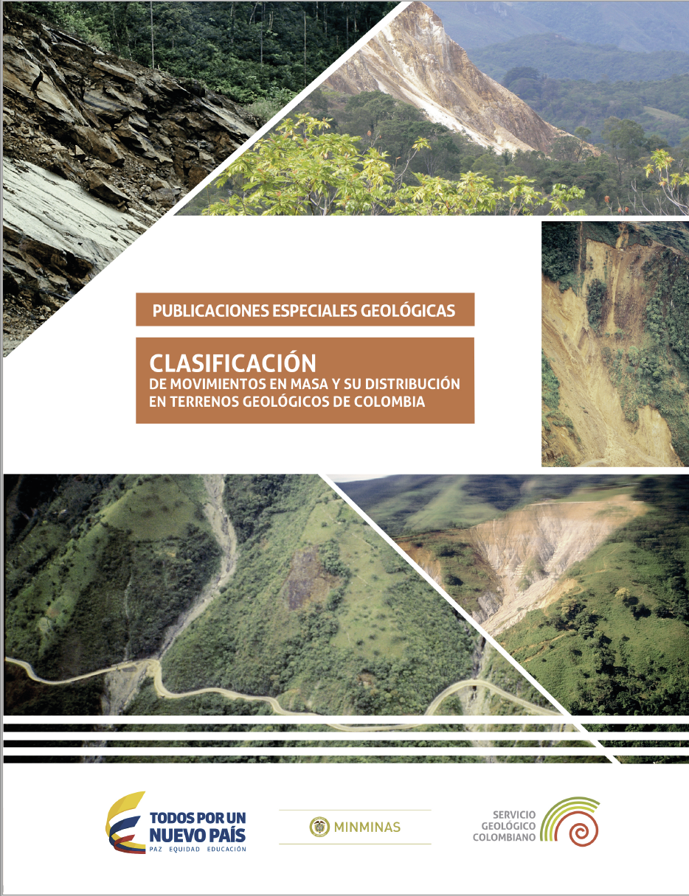
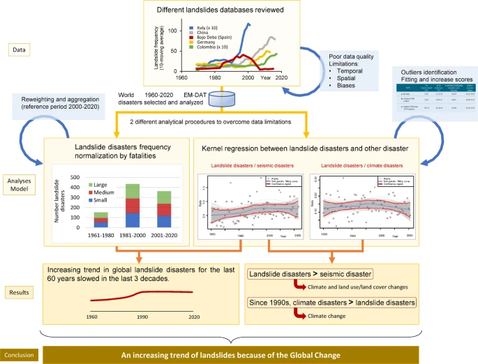

Falla de terreno
Instituciones nacionales
Instituciones y redes internacionales
Amenaza por movimientos en masa
- SGC
- Lecturas y recursos
Sistemas de información
- Global Fatal Landslide Database. Link
- Global Landslide Catalog. Link
- EM-DAT. Link
- Desinventar. Link
- Repositorio cooperativo abierto de movimientos en masa (COOLR), NASA. Link
Colombia
- Servicio Geológico Colombiano. Sistema de información de movimientos en masa - SIMMA

Geohazards. UNAL Medellín. Link
Artículos científicos
- [@garcia-delgado2022] [@aristizábal2025]
Evaluación del riesgo por movimientos en masa
Comunicación del riesgo por movimientos en masa
Comunicación del riesgo por movimientos en masa
Reducción del riesgo de movimientos en masa
- Implementar sistemas de alerta temprana.
- Reforestar áreas vulnerables y proteger la cobertura vegetal.
- Controlar el uso del suelo y evitar construcciones en zonas de alto riesgo.
- Realizar obras de estabilización de taludes y drenaje.
- Capacitar a la comunidad sobre prevención y autoprotección.
Manejo de desastres por movimientos en masa
- Activar los planes de emergencia y evacuación.
- Coordinar con las autoridades locales y organismos de socorro.
- Brindar atención médica y apoyo psicológico a los afectados.
- Restablecer servicios básicos y vías de acceso.
- Evaluar daños y planificar la recuperación de la zona.
Lecturas de referencia
Lea esto 👇🏼
Clasificación de movimiento en masa y su distribución en terrenos geológicos de Colombia

Clasificación de movimiento en masa y su distribución en terrenos geológicos de Colombia. Juan Montero Olarte. https://doi.org/10.32685/9789585978218

Encyclopedia of Natural Hazards. Landslide Types. David Cruden
Understanding and Reducing Landslide Disaster Risk: Volume 4. Link.
Landslide Hazard and Risk. Link.
The Landslide Handbook— A Guide to Understanding Landslides. USGS. Link.
A unified landslide classification system for loess slopes: A critical review. Geomorphology. 2019. Link
The Varnes classification of landslide types, an update. Lanslides. 2013. Link.
Using the Working Classification of Landslides to Assess the Danger from a Natural Slope. Landslide Processes. 2015. Link
Deslizamientos fatales en Colombia (desde tiempos históricos hasta 2020) y sus impactos socioeconómicos. 2020. Link
Space-time analysis of the relationship between landslides occurrence, rainfall variability and ENSO in the Tropical Andean Mountain region in Colombia. 2024. Link.
Landslide Travel Distances in Colombia from National Landslide Database Analysis. 2022. Link.
Spatial and temporal patterns and the socioeconomic impacts of landslides in the tropical and mountainous Colombian Andes. Disasters. 2020. Link.
Spatial and temporal landslide distributions using global and open landslide databases. Natural Hzards. 2023. Link.
An Increasing Trend of Landslides as a Consequence of the Global Change. Earth Systems and Environment. 2025. Link.
An Increasing Trend of Landslides as a Consequence of the Global Change
An Increasing Trend of Landslides as a Consequence of the Global Change
Entrenamiento
- Cope
Repositorios
- Download